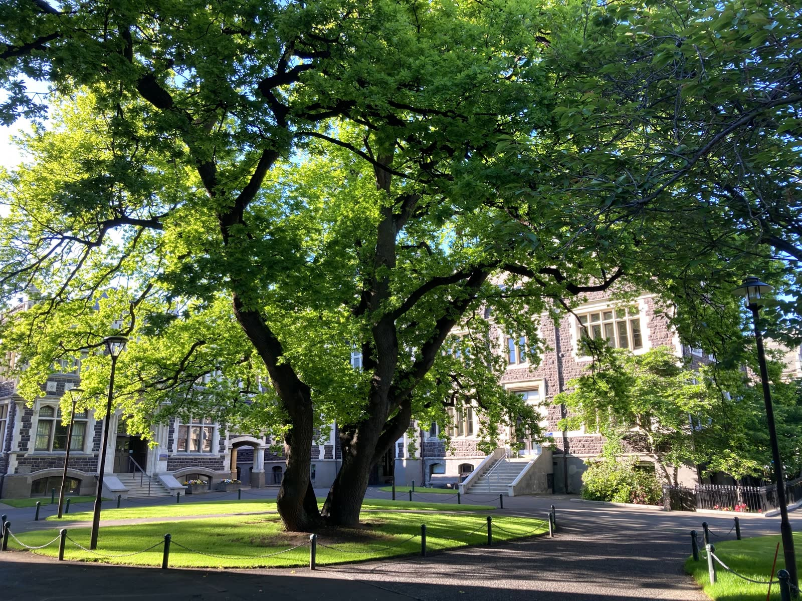
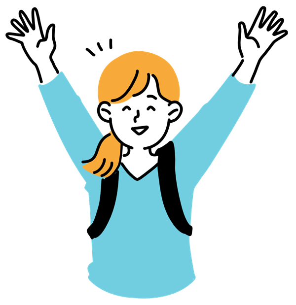

創立から受け継ぐ想い
建学の精神

女性が学ぶ機会がまだ限られていた時代に創立。「自ら考え、他者を思いやり、行動する」という精神を、すべての学部の教育に息づかせています。
沿革を見る2027年度 入学者選抜
aoba women's university
少人数の学びと、一人ひとりに寄り添うサポート。
自分らしく学び、社会で輝く女性を育てます。



青葉女子大学は「知性としなやかさをもって、社会に灯をともす女性」の育成を掲げてきました。創立以来受け継いできた想いと、これからの時代に向けた学びをご紹介します。
先輩たちの声
先輩インタビュー Vol.1
国際学部
国際コミュニケーション学科 3年
A.Kさん
少人数クラスで毎回発言するうちに、間違えることが怖くなくなりました。今は留学に向けて準備中です。
先輩インタビュー Vol.2
人間科学部
児童教育学科 4年
M.Sさん
附属園での実習を通して、教える楽しさを知りました。ゼミの先生には教員採用試験の面接練習まで付き合ってもらっています。
先輩インタビュー Vol.3
生活科学部
食物栄養学科 2年
Y.Tさん
調理実習と実験が両方あるのが魅力。サークルでは学園祭のメニュー開発を担当しました。
キャンパスで過ごす毎日
ひとりでも、みんなとでも
運動系から文化系まで

四季を感じる

※仮 の表示は仮の内容です。正式な日程・要件は募集要項でご確認ください。
見て、聞いて、体験しよう。
模擬授業、在学生とのキャンパスツアー、個別相談、入試説明会を予定しています。保護者の方もご参加いただけます。
開催日：決まり次第お知らせします
出願書類や大学案内パンフレットを無料でお届けします。デジタル版もご覧いただけます。
資料を請求するキャンパスで、あなたに会える日を
楽しみにしています。